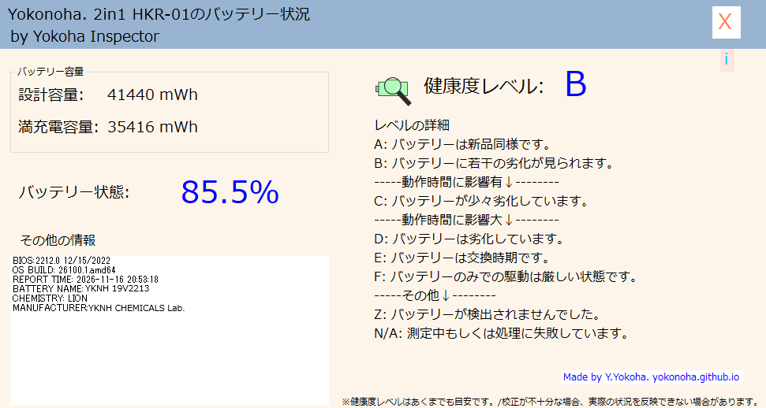

Yokoha Inspector は、powercfg.exe が生成するバッテリーレポートの数値を自動で読み取り、バッテリーの劣化具合をわかりやすいレベル別（A〜F・Z）で表示する軽量ユーティリティです。
劣化度はスマホのように%表示させることも可能です。
対応OS：Windows 11（USBメモリからの直接起動も可能）
(そして、、、ごめんなさい、64bit版のみです...) ちょっと困るよという方へ

難しいコマンド操作なしで、誰でも素早くバッテリー状態を把握できます。
powercfg.exe（batteryreport）から、設計容量（Design Capacity）と満充電容量（Full Charge Capacity）等の数値を参照。劣化具合を自動計算し、直感的にわかるレベルへ分類して表示します。
PCへのインストール作業は不要で、実行ファイル（.exe）単体ですぐに起動できます。USBメモリに入れて持ち運べるため、複数台の中古PCやジャンクPCを連続で検品する現場でも手間がかかりません。
「最近電池の減りが早いので買い替えたい」という方の判断材料としてはもちろん、個人でジャンクPCの再生・検品を行う方のコンディションチェックにも活用できます。
バッテリーの劣化度合いを A〜F の6段階 と、特殊状態の Z・N/A で判定します。各ランクの具体的な目安は以下の通りです。
設計容量に対して満充電容量がほぼ満タンに保たれており、購入直後のPCや充放電回数が極めて少ない極上コンディションの個体に見られるレベルです。本来のバッテリー駆動時間をほぼ維持しています。
新品時と比べるとわずかに最大容量が減少していますが、実用上の違和感はなく、日常的な持ち運びや電源ケーブルなしでの作業にも十分耐えられる良好なコンディションです。
普段使いには問題ないものの、新品時より駆動時間が短くなっています。外出先での長時間作業や動画再生など負荷のかかる用途では、残量の減りが気になり始める水準です。中古PCでは標準的な使用感の目安となります。
バッテリーの消耗がはっきりと体感できる段階です。短時間の移動や会議程度であればバッテリー駆動が可能ですが、長時間の外出にはACアダプターの携行が欠かせず、バッテリー交換やPC買い替えを視野に入れたい状態です。
満充電を行っても、新品時の半分以下の容量しか蓄えられなくなっています。電源コードを抜いた状態での実運用は厳しく、モバイル用途として使い続ける場合は早めの対応(PC本体の買い替え)を推奨します。
バッテリー容量が著しく低下しており、蓄電能力をほとんど失っているレベルです。ACアダプターを抜くと短時間で電源が落ちる恐れがあるため、実質的に電源ケーブル常時接続での据え置き利用が前提となります。
バッテリーを搭載していないデスクトップPC、バッテリーパックを取り外した状態のジャンクPC、あるいはバッテリー自体の完全故障や認識エラーによってOS側からバッテリーが検出できない場合に表示されます。
powercfg.exe によるバッテリーレポートの出力・解析処理が進行中であるか、権限不足やシステム環境上の問題によりレポートの生成・数値読み取りが正常に完了しなかった場合に表示されます。
設計容量値（Design Capacity）を満充電容量値（Full Charge Capacity）が上回っている場合（計算上のパーセンテージが100%を上回る場合）など明らかにおかしい数値結果になっているとソフトが自動判断した際に、健康度レベルの横に (不正確) と表示されます。バッテリー異常やバッテリー校正にずれが見られる端末で発生する現象です。
現在、キャラクター「須摩 ほかり（すま ほかり）」とのMix企画として、キャラクター付きバージョンの「Hokari Inspector」を準備中です。
通常版の機能はそのままに、キャラクター付きの画面でバッテリーチェックを行える特別版として制作を進めています。
(不正確) と表示される場合は、満充電から放電（使い切り）までを数回繰り返してバッテリーの校正を行うことで、より正確な数値が取得できるようになる場合があります。
インストーラーではないため、インストールは不要です。
※ ダウンロードおよび実行の前に、上記の「ご利用上の注意事項・免責事項」を必ずお読みください。
32bitプロセッサを搭載したPCの減少、最新OSでの非対応化、開発時の動作確認環境(本ソフトは8台のPCにて動作確認を行いました)に関して32bit環境が用意できない点を鑑み、本ソフトでは32bit版の公開を行っておりません。
本ソフトは64bitCPU向けにビルドしたもののみ正式に公開していますが、オープンソースとしてソースコードをすべて公開しているため、ご自身で32bit版をビルド(作成)することも可能です。
その場合はプロジェクト設定にてx64となっている設定をx86_64やAnyCPUと修正して発行すると32bit環境でも動作するバージョンを作成できます。